-
Wildfire Response Hexacopter
An electric vertical takeoff and landing aircraft built for wildfire response. Team Mirage is UC San Diego’s entry in the Vertical Flight Society’s sixth annual Design-Build-Vertical Flight student competition, where teams deliver simulated fire suppressant (sandbags) to marked zones. I was one of the team’s two airframe leads, working with Shiwei Zhang under advisor John T. Hwang, and I led the airframe’s structural testing and manufacturing design.
The aircraft taking off. Design values from our design review
- Weight
- 8.4 kg max takeoff, 7.8 kg empty, thrust-to-weight 1.8
- Propulsion
- 18 in propellers, 360 kv motors, 6S 7000 mAh battery
- Structure
- Carbon fiber tubes, aluminum base plate, PLA joints and connectors
- Targets
- 11 min endurance, 1 km range, 3 m/s design speed, 5 s takeoff
My part
- Tested the airframe structurally with Ansys FEA.
- Developed the fabrication and assembly processes, including composite layups and CNC machining.
What the team built
- Arms and legs sized against global buckling, local buckling, and bending. The base plate compared aluminum with plywood and fiberglass, with topology optimization.
- An electromagnetic payload pickup and release, aligned with the aircraft’s center of mass, with fewer moving parts than a mechanical gripper.
- Autonomy on a Pixhawk autopilot with an NVIDIA Jetson running ROS and PX4, tied together by a custom ROS-to-PX4 bridge.
Design review presentation, March 2026
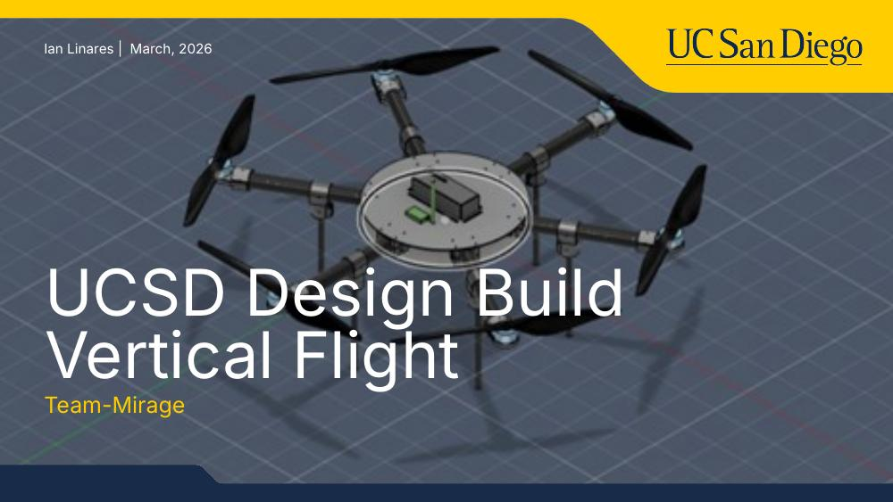
Title slide 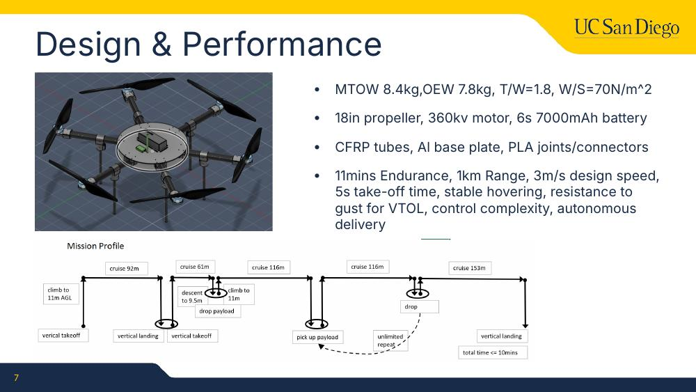
Design and performance 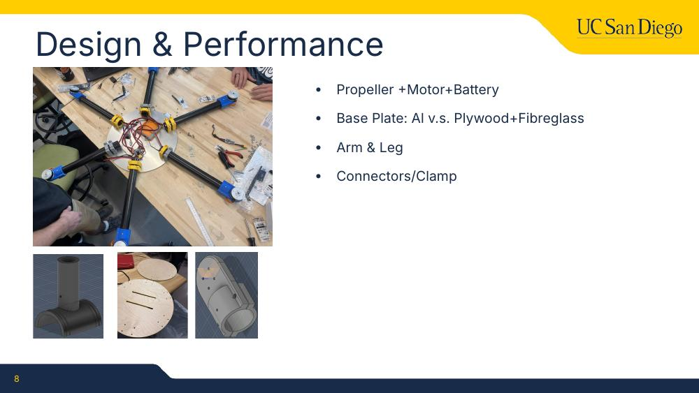
Component selection 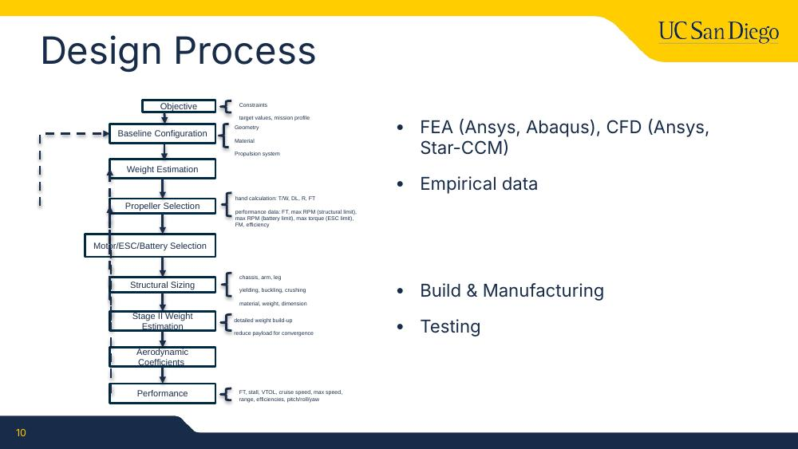
Design process 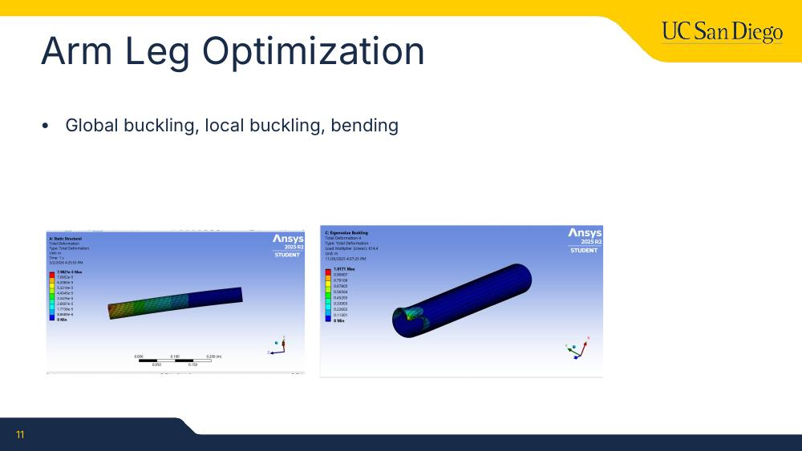
Arm and leg optimization, with Ansys buckling and bending results 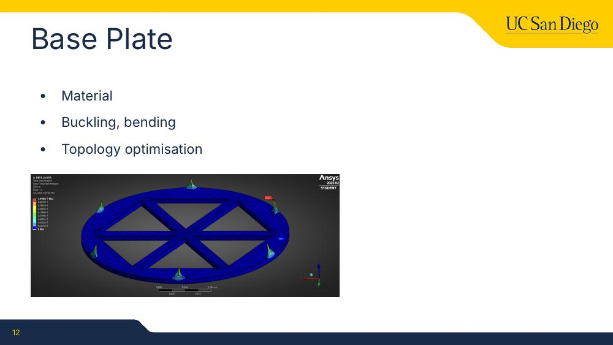
Base plate 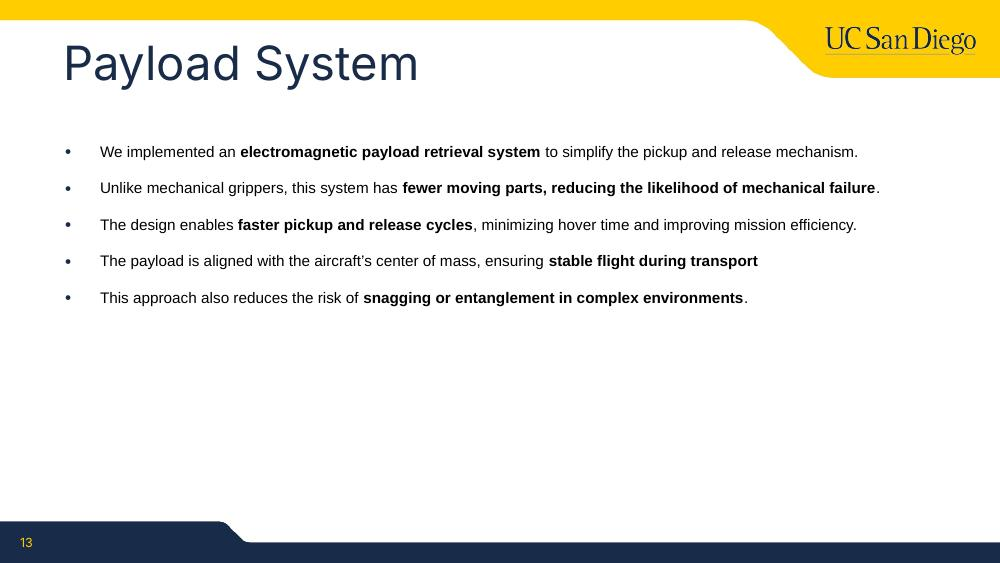
Payload system 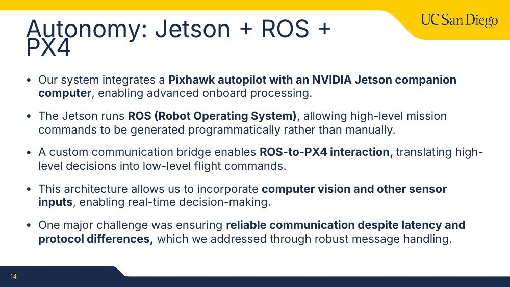
Autonomy 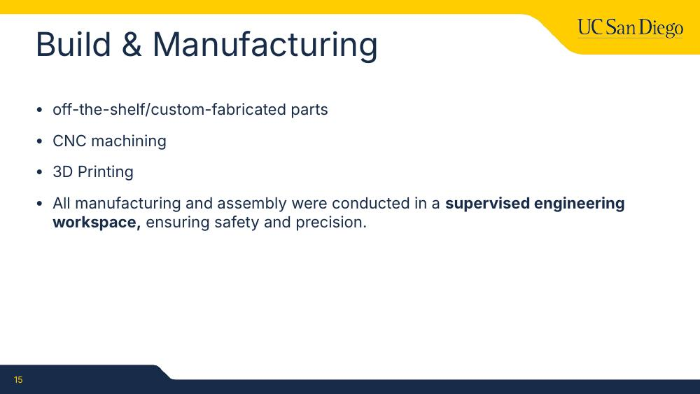
Build and manufacturing 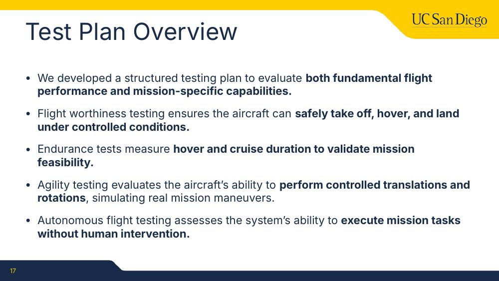
Test plan 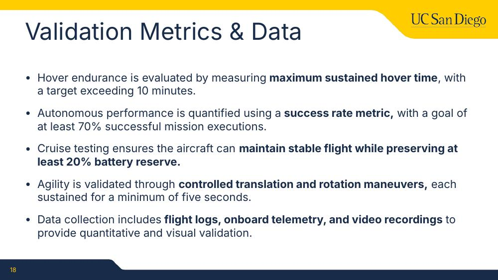
Validation metrics 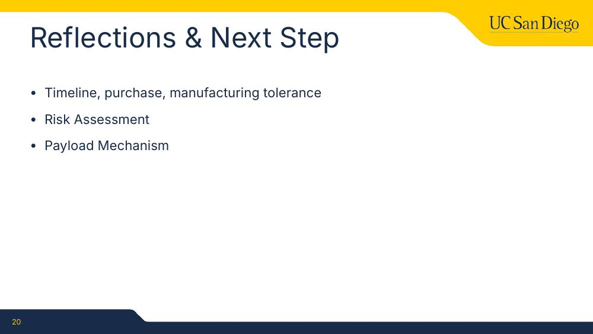
Reflections and next steps